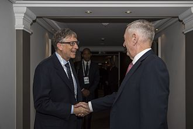

Personal Life
| Gates married Melinda French on a golf course on the Hawaiian island of Lanai on January 1, 1994.[citation needed] They have three children: Jennifer, Rory and Phoebe.[citation needed] The family's residence is an earth-sheltered mansion in the side of a hill overlooking Lake Washington in Medina, Washington. In 2009, property taxes on the mansion were reported to be US$1.063 million, on a total assessed value of US$147.5 million. The 66,000-square-foot (6,100 m2) estate has a 60-foot (18 m) swimming pool with an underwater music system, as well as a 2,500-square-foot (230 m2) gym and a 1,000-square-foot (93 m2) dining room. In an interview with Rolling Stone, Gates stated in regard to his faith: "The moral systems of religion, I think, are super important. We've raised our kids in a religious way; they've gone to the Catholic church that Melinda goes to and I participate in. I've been very lucky, and therefore I owe it to try and reduce the inequity in the world. And that's kind of a religious belief. I mean, it's at least a moral belief." |
.jpg) |
Gates also said: "I agree with people like Richard Dawkins that mankind felt the need for creation myths. Before we really began to understand disease and the weather and things like that, we sought false explanations for them. Now science has filled in some of the realm – not all – that religion used to fill. But the mystery and the beauty of the world is overwhelmingly amazing, and there's no scientific explanation of how it came about. To say that it was generated by random numbers, that does seem, you know, sort of an uncharitable view [laughs]. I think it makes sense to believe in God, but exactly what decision in your life you make differently because of it, I don't know."
Gates purchased the Codex Leicester, a collection of scientific writings by Leonardo da Vinci, for US$30.8 million at an auction in 1994. Gates is an avid reader, and the ceiling of his large home library is engraved with a quotation from The Great Gatsby. He also enjoys playing bridge, tennis, and golf. Gates's days are planned for him on a minute-by-minute basis, similar to the U.S. President's schedule. Despite his wealth and extensive business travel, Gates flew coach in commercial aircraft until 1997, when he bought a private jet.
|  |
In 1999, his wealth briefly surpassed US$101 billion. Since 2000, the nominal value of his Microsoft holdings has declined due to a fall in Microsoft's stock price after the dot-com bubble burst and the multi-billion dollar donations he has made to his charitable foundations. In May 2006, Gates remarked that he wished that he were not the richest man in the world because he disliked the attention it brought. In March 2010, Gates was the second wealthiest person behind Carlos Slim, but regained the top position in 2013, according to the Bloomberg Billionaires List. Slim retook the position again in June 2014 (but then lost the top position back to Gates). Between 2009 and 2014, his wealth doubled from US$40 billion to more than US$82 billion. In October 2017, Gates was surpassed by Amazon founder Jeff Bezos as the richest person in the world. On November 15, 2019, he once again became the richest person in the world after a 48% increase in Microsoft shares, surpassing Bezos. Gates told the BBC, "I've paid more tax than any individual ever, and gladly so ... I've paid over $6 billion in taxes." He is a proponent of higher taxes, particularly for the rich. |
Gates has held the top spot on the list of The World's Billionaires for 18 out of the past 23 years. Gates has several investments outside Microsoft, which in 2006 paid him a salary of US$616,667 and US$350,000 bonus totalling US$966,667. In 1989, he founded Corbis, a digital imaging company. In 2004, he became a director of Berkshire Hathaway, the investment company headed by long-time friend Warren Buffett.
In 2016, he revealed that he is color-blind.